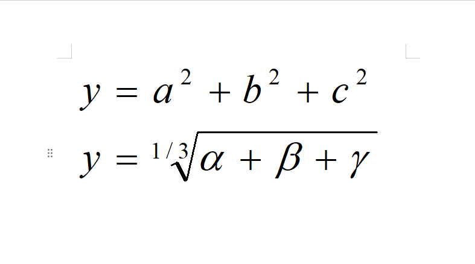

1.Струйный принтер — устройство, которое создаёт изображение или текст путём распыления жидких чернил на бумагу Назначение Струйные принтеры предназначены для переноса информации с компьютера на бумажный носитель. Они могут печатать как текстовые документы, так и изображения, включая фотографии и графику. Применение Некоторые области применения струйных принтеров: Домашняя и офисная печать. Принтеры работают с бумагой различных типов и размеров, что удобно для печати документов и контрактов. Создание маркетинговых материалов. Струйные принтеры используют для печати листовок, брошюр, визитных карточек и баннеров. Искусство и ремёсла. Принтеры применяют для художественных проектов, например, создания наклеек и трафаретов. Образование. Преподаватели используют струйные принтеры для распечатки рабочих листов, планов уроков и наглядных пособий, а учащиеся — для исследовательских работ и проектов. Личная печать. Принтеры подходят для печати семейных фотографий, поздравительных открыток и других документов. Принцип работы Процесс работы струйного принтера включает несколько этапов: Получение задания на печать. Принтер получает данные от компьютера или другого устройства, контроллер анализирует их и преобразует в команды для печатающей головки. Подача чернил. Чернила поступают из картриджей, расположенных внутри принтера. Печатающая головка состоит из множества микронасадок, через которые чернила подаются на бумагу. Смешивание цветов. Большинство струйных принтеров используют четыре основных цвета чернил: чёрный, голубой, пурпурный и жёлтый (CMYK). Смешивая эти цвета в различных пропорциях, принтер может воспроизводить широкий диапазон оттенков и цветов. Формирование изображения. Печатающая головка, движущаяся вдоль бумаги, создаёт изображение путём выброса капель чернил через микронасадки. Существует два основных типа струйной печати: Термическая. Используются нагревательные элементы, которые создают пузырьки чернил, выталкивающие капли на бумагу. Пьезоэлектрическая. Применяются кристаллы, которые изменяют форму под действием электрического тока, выбрасывая капли чернил.
2.
3.
| № | Ф.И.О | Пол | Должность | Должностной оклад | Надбавка | К выплате | |
|---|---|---|---|---|---|---|---|
| Оклад | Владение иностр. языком |
||||||
| 1 | Антонов П.П | м | Нач. отдела | 54000 | владеет | 13500 | 67500 |
| 2 | Гомелев Н.Р | м | Машинист | 38000 | нет | нет | 38000 |
| 3 | Кулик В.В | м | Слесарь | 38000 | владеет | 9500 | 47500 |
| 4 | Антонова С.В | ж | Зам. начальника | 44000 | владеет | 11000 | 55000 |
| Среднее | 43500 | 4500 | 43500 | ||||
| Минимум | 38000 | нет | 38000 | ||||
| Максимум | 54000 | 13500 | 67500 | ||||
| Всего | 135500 | 34000 | 135500 | ||||